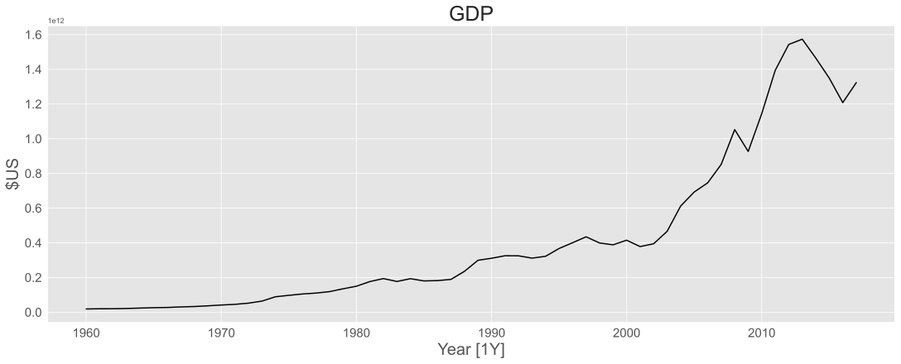
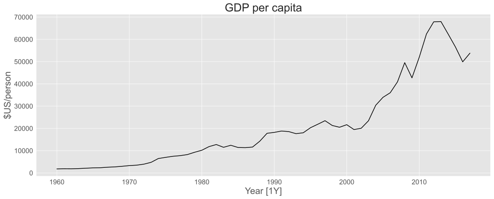
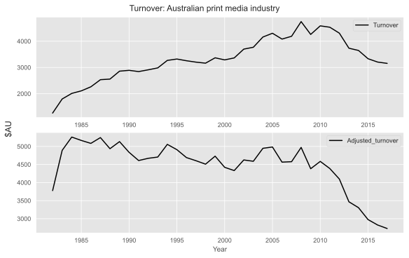
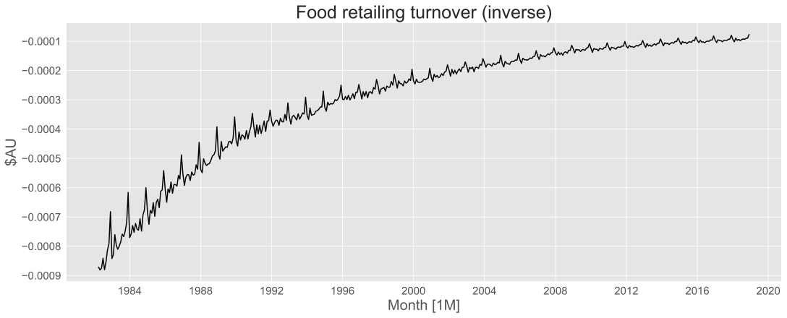
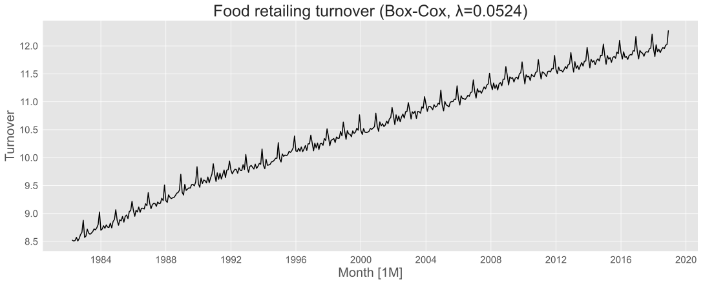
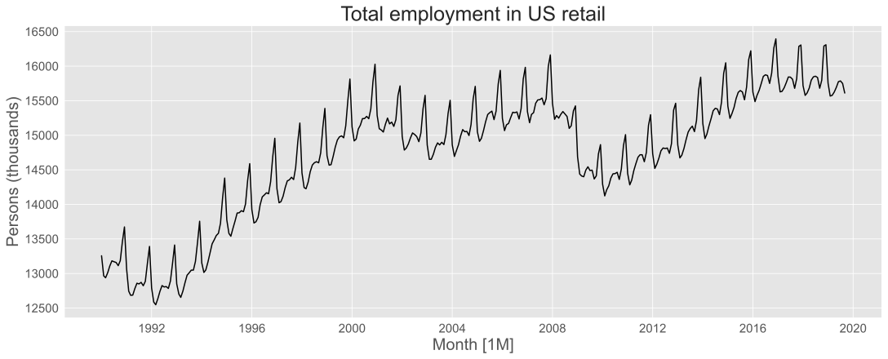
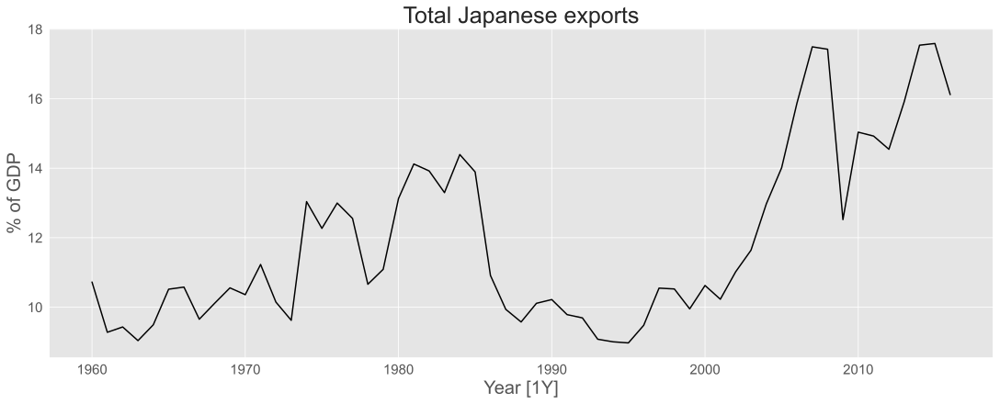
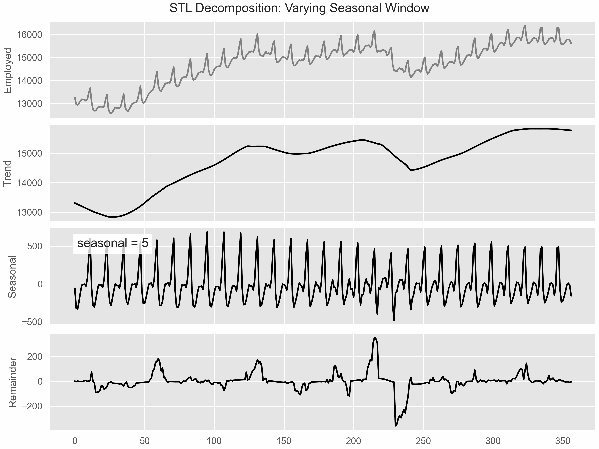
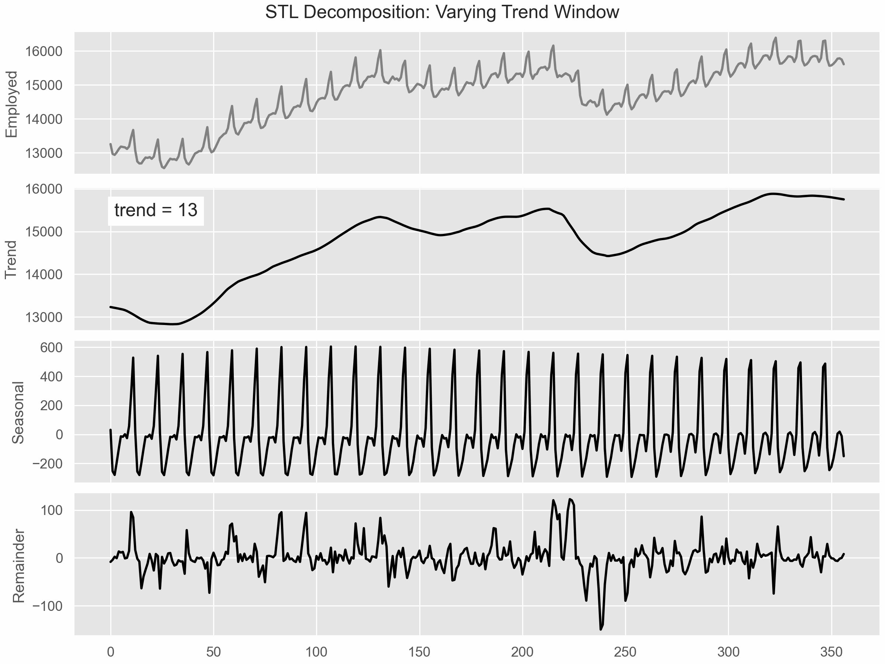

Time Series Decomposition
MATH840 | Time Series
Ihor Miroshnychenko
Kyiv School of Economics
Transformations and adjustments
Per capita adjustments

Inflation adjustment
Mathematical transformations
If the data show different variation at different levels of the series, then a transformation may be useful to stabilize the variance.
Denote original observations as \(y_1, y_2, \ldots, y_T\) and transformed observations as \(w_1, w_2, \ldots, w_T\).
Mathematical transformations for variance stabilization
| Transformation | Formula | |
|---|---|---|
| Square root | \(w_t = \sqrt{y_t}\) | \(\downarrow\) |
| Cube root | \(w_t = \sqrt[3]{y_t}\) | Increasing |
| Logarithm | \(w_t = \log(y_t)\) | strange |
Logarithms, in particular, are useful because they are more interpretable: changes in the log scale correspond to relative (percentage) changes in the original scale.

\(\frac{-1}{y_t}\) transformation is useful when the series shows a rapid increase.
Box-Cox transformation
Each of the above transformations is a special case of the Box-Cox transformation:
\[ w_t = \begin{cases}\frac{\text{sign}(y_t)|y_t|^{\lambda} - 1}{\lambda}, & \text{if } \lambda \neq 0 \\\\ \log(y_t), & \text{if } \lambda = 0\end{cases} \]
- Actually the Bickel-Doksum transformation (1979) allows for negative values as well.
- \(\lambda=1\) gives no transformation.
- \(\lambda=0.5\) gives the square root transformation.
- \(\lambda=0\) gives the logarithmic transformation.
- \(\lambda=-1\) gives the inverse transformation.

How to choose \(\lambda\)?
Guerrero transformation: ratio of the standard deviation to the mean raised to a certain power is constant.
\[ \text{VAR}(X)^\frac{1}{2} / \text{E}(X)^{1-\lambda} = a \]
The series is divided into subgroups (e.g., by year). For each subgroup, the mean \(\bar{Z}_h\) and standard deviation \(S_h\) are calculated.
How to choose \(\lambda\): CV minimization
Algorithm:
- Partition the series into subgroups (e.g., by year).
- Calculate the mean (\(\bar{Z}_h\)) and standard deviation (\(S_h\)) for each subgroup.
- For each candidate \(\lambda\):
- Calculate the ratio \(R_h(\lambda) = S_h / \bar{Z}_h^{(1-\lambda)}\) for all subgroups.
- Compute the Coefficient of Variation (CV) of these ratios.
- Select the \(\lambda\) that yields the minimum CV.
The coefficient of variation (CV) is defined as the ratio of the standard deviation to the mean: \[ \text{CV} = \frac{S}{\bar{Z}} \text{, where } S = \text{std}(X), \bar{Z} = \text{mean}(X) \]
How to choose \(\lambda\): Linear regression approach
Concept:
The non-linear relationship \(S_h ≈ a \times \bar{Z}_h^{(1-λ)}\) can be linearized by taking the natural logarithm: \[ \log(S_h) ≈ \log(a) + (1-λ) \times \log(\bar{Z}_h) \]
This is a simple linear regression \(Y = \beta_0 + \beta_1 \times X\), where:
- \(Y = \log(S_h)\)
- \(X = \log(\bar{Z}_h)\)
- The slope \(\beta_1 = (1-λ)\)
Algorithm:
- Partition the series into subgroups.
- Calculate \(log(S_h)\) and \(log(\bar{Z}_h)\) for each subgroup.
- Fit a linear regression of \(log(S_h)\) on \(log(\bar{Z}_h)\).
- Estimate the slope \(\hat{\beta}_1\).
- Calculate \(\hat{λ}\) from the slope: \(\hat{λ} = 1 - \hat{\beta}_1\).
How to choose \(\lambda\): Food retailing turnover
Transformations summary
- Often no transformation is needed.
- Simple transformations (log, sqrt, cbrt, inverse) are easy to interpret.
- Transformations can have very large effects on PI.
- If some data are zero or negative, then use \(\lambda > 0\).
np.log1p()can be used for zero values (equivalent to Box-Cox with \(\lambda=0\) and shifting data by 1).- Transformations must be inverted to obtain forecasts on the original scale.
Time series components
Time series patterns
Recall
- Trend: Long-term movement in the data.
- Seasonality: Regular pattern of fluctuations.
- Cyclic patterns: Irregular fluctuations due to economic or other cycles.
- Irregular components: Random noise or shocks.
Time series decomposition
\[y_t = f(T_t, S_t, R_t)\]
Where:
- \(y_t\) = observed value at time \(t\)
- \(T_t\) = trend-cycle component at time \(t\)
- \(S_t\) = seasonal component at time \(t\)
- \(R_t\) = remainder component at time \(t\)
Additive model: \(f(T_t, S_t, R_t) = T_t + S_t + R_t\)
Multiplicative model: \(f(T_t, S_t, R_t) = T_t \times S_t \times R_t\)
Time series decomposition
- Additive decomposition is appropriate when the magnitude of seasonal fluctuations and residuals are roughly constant over time.
- Multiplicative decomposition is suitable when the magnitude of seasonal fluctuations and residuals increases with the level of the series.
- Multiplicative decomposition more prevalent with economic and financial data.
- Alternative: use Box-Cox transformation to stabilize variance, then apply additive decomposition.
- Logs turn multiplicative relationships into additive ones:
\[y_t = T_t \times S_t \times R_t \implies \log(y_t) = \log(T_t) + \log(S_t) + \log(R_t)\]
Example: Employment in the US retail sector
Example: Employment in the US retail sector
| ds | data | trend | seasonal | remainder |
| 1990-01-01 | 13,255.800 | 13,296.249 | −3.700 | −36.749 |
| 1990-02-01 | 12,966.300 | 13,276.085 | −288.398 | −21.387 |
| 1990-03-01 | 12,938.200 | 13,255.663 | −306.658 | −10.805 |
| 1990-04-01 | 13,012.300 | 13,234.986 | −235.775 | 13.089 |
| 1990-05-01 | 13,108.300 | 13,214.071 | −115.399 | 9.628 |
Seasonal adjustment
- Useful by-products of decomposition: an easy way to calculate seasonally adjusted data.
- Additive model: \[y_t - S_t = T_t + R_t\]
- Multiplicative model: \[y_t / S_t = T_t \times R_t\]
Moving average
Moving averages
The simplest estimate of the trend-cycle component is a moving average.
\(m\)-MA
\[ \hat{T}_t = \frac{1}{m} \sum_{i=-k}^{k} y_{t+i} \]
Where \(k=\frac{m-1}{2}\) for odd \(m\) and \(k=\frac{m}{2}\) for even \(m\).
If \(m=7\) (odd), then \(k=\frac{7-1}{2}=3\). It’s a centered 7-MA:
\[ \hat{T}_t = \frac{1}{7} (y_{t-3} + y_{t-2} + y_{t-1} + y_t + y_{t+1} + y_{t+2} + y_{t+3}) \]
Moving averages

| unique_id | ds | Exports | 3_MA | 5_MA | 7_MA | 11_MA | 13_MA | 15_MA |
| Japan | 1960 | 10.72 | ||||||
| Japan | 1961 | 9.28 | 9.81 | |||||
| Japan | 1962 | 9.43 | 9.25 | 9.59 | ||||
| Japan | 1963 | 9.04 | 9.32 | 9.55 | 9.87 | |||
| Japan | 1964 | 9.49 | 9.68 | 9.81 | 9.71 | |||
| Japan | 1965 | 10.52 | 10.20 | 9.86 | 9.83 | 9.98 | ||
| Japan | 1966 | 10.58 | 10.25 | 10.07 | 9.99 | 10.02 | 10.09 | |
| Japan | 1967 | 9.65 | 10.11 | 10.28 | 10.18 | 10.10 | 10.00 | 10.25 |
| Japan | 1968 | 10.11 | 10.11 | 10.25 | 10.43 | 10.12 | 10.29 | 10.35 |
| Japan | 1969 | 10.56 | 10.34 | 10.38 | 10.38 | 10.48 | 10.51 | 10.60 |
Moving averages smoothing
So a MA is an avareage of nearby values.
- 3-MA: \[\hat{T}_t = \frac{1}{3} (y_{t-1} + y_t + y_{t+1})\]
- 5-MA: \[\hat{T}_t = \frac{1}{5} (y_{t-2} + y_{t-1} + y_t + y_{t+1} + y_{t+2})\]
- Each average computed by dropping the oldest observation and adding the newest one.
- Averaging moves through the series, smoothing out short-term fluctuations.
Endpoints problem
Why is there no estimate at endpoints?
- For a 3-MA, there cannot be estimates at the first and last time points, because there is no prior or subsequent observation to include in the average.
- Generally: there cannot be estimates at times near endpoints.
The order of MA
- Larger order means more smoothing, but also more missing values at the ends.
- order = length of seasonal cycle is often a good choice (e.g., 12 for monthly data with yearly seasonality).
- But so far odd orders?
Centered moving averages
4-MA:
\[\frac{1}{4} (y_{t-2} + y_{t-1} + y_t + y_{t+1})\]
or \[\frac{1}{4} (y_{t-1} + y_t + y_{t+1} + y_{t+2})\]
Solution: take a further 2-MA to center it.
\[ \hat{T}_t = \frac{1}{2} \left \{ \frac{1}{4} (y_{t-2} + y_{t-1} + y_t + y_{t+1}) + \frac{1}{4} (y_{t-1} + y_t + y_{t+1} + y_{t+2}) \right \} \\ = \frac{1}{8}y_{t-2} + \frac{1}{4}y_{t-1} + \frac{1}{4}y_t + \frac{1}{4}y_{t+1} + \frac{1}{8}y_{t+2} \]
Centered moving averages
| Year | Data | 4-MA | 2 x 4-MA |
|---|---|---|---|
| 1992 Q1 | 443.00 | ||
| 1992 Q2 | 410.00 | ||
| 1992 Q3 | 420.00 | 451.25 | |
| 1992 Q4 | 532.00 | 448.75 | 450.00 |
| 1993 Q1 | 433.00 | 451.50 | 450.12 |
| 1993 Q2 | 421.00 | 449.00 | 450.25 |
| 1993 Q3 | 410.00 | 444.00 | 446.50 |
| 1993 Q4 | 512.00 | 448.00 | 446.00 |
| … | … | 438.00 | 443.00 |
| … | … | … | … |
MA trend-cycle estimation
A moving average of the same length as the season removes the seasonal pattern.
- For quarterly data: use a 2 x 4-MA.
- For monthly data: use a 2 x 12-MA.
\[ \hat{T}_t = \frac{1}{24}y_{t-6} + \frac{1}{12}y_{t-5} + \dots + \frac{1}{12}y_{t+5} + \frac{1}{24}y_{t+6} \]
Classical Decomposition
Trend-cycle
Additive decomposition: \(y_t = T_t + S_t + R_t = \hat{T}_t + \hat{S}_t + \hat{R}_t\)
Multiplicative decomposition: \(y_t = T_t \times S_t \times R_t = \hat{T}_t \times \hat{S}_t \times \hat{R}_t\)
- Estimate trend-cycle component \(\hat{T}_t\) using moving averages.
Compute seasonal component \(\hat{S}_t\):
- For additive model: \(\hat{S}_t = y_t - \hat{T}_t\)
- For multiplicative model: \(\hat{S}_t = y_t / \hat{T}_t\)
De-trend the series:
- For additive model: \(D_t = y_t - \hat{T}_t = \hat{S}_t + \hat{R}_t\)
- For multiplicative model: \(D_t = y_t / \hat{T}_t = \hat{S}_t \times \hat{R}_t\)
Estimating seasonal component
- Seasonal index for each season is estimated as an average of the detrended series for that season of successive years.
- E.g., take averages across all Januaries to get \(S^{(1)}\) if your data is monthly.
- If necessary, adjust the seasonal indices so that:
- for additive: \(S^{(1)} + S^{(1)} \dots S^{(12)} = 0\)
- for multiplicative: \(S^{(1)} + S^{(2)} + \dots + S^{(12)} = m\)
- The seasonal component \(\hat{S}_t\) simply consists of replications of the seasonal indices.
Remainder component
Additive model: \(\hat{R}_t = y_t - \hat{T}_t - \hat{S}_t\)
Multiplicative model: \(\hat{R}_t = y_t / (\hat{T}_t \times \hat{S}_t)\)
Classical decomposition
- Choose additive or multiplicative model.
- For multiplicative model, this method of estimation is known as the ratio-to-moving-average method.
History of time series decomposition
- Classical method originated in the 1920’s.
- Census II method developed in the 1957. Basis for X-11 and variants (X-12-ARIMA, X-13-ARIMA-SEATS).
- STL (Seasonal and Trend decomposition using Loess) developed in 1983.
- TRAMO/SEATS developed in the 1990s.
STL decomposition
STL decomposition
- STL: Seasonal-Trend decomposition using Loess
- Very versatile and robust.
- Unlike X-12-ARIMA, STL will handle any type of seasonality.
- Seasonal component allowed to change over time, and rate of change controlled by user.
- Smoothness of trend-cycle also controlled by user.
- Robust to outliers
- Not trading day or calendar adjustments.
- Only additive.
- Take logs to get multiplicative decomposition.
- Use Box-Cox transformations to get other decompositions.
The Core Engine: Loess
Loess (Locally Weighted Regression) is the smoothing method that powers the entire STL procedure.
- The Idea: Instead of just averaging points, Loess fits a simple local regression model (linear or quadratic) for each data point.
- The Process:
- For each point
x, a neighborhood ofqnearest points is selected. - Each neighbor is given a weight using the tricube weight function: \[ W(u) = (1 - u^3)^3 \quad \text{for } 0 \le u < 1 \] where
uis the normalized distance to the neighbor. Closer points get much more weight. - A weighted least squares regression is fit to these neighbors.
- The value of this regression at point
xis the smoothed value.
- For each point
The Overall Design: Two Nested Loops
STL uses an elegant two-loop structure to iteratively refine the components.
The Inner Loop
- Goal: To iteratively update the seasonal and trend components.
- Consists of 6 steps that sequentially smooth the data to extract the seasonal part, then the trend part.
- It is run
n(i)times (typically 1 or 2 passes).
The Outer Loop
- Goal: To achieve robustness to outliers.
- After each full inner loop, the remainder component is calculated.
- Points with large remainders (outliers) are assigned low weights.
- The inner loop is then re-run, using these weights in the Loess smoothing.
- It is run
n(o)times.
The Inner Loop: Step-by-Step
A single pass of the inner loop consists of two main stages. Let \(T_v^{(k)}\) and \(S_v^{(k)}\) be the estimates at iteration \(k\).
Stage 1: Seasonal Smoothing
- Detrending: Calculate the detrended series: \(Y_v - T_v^{(k)}\)
- Cycle-subseries Smoothing: Break the detrended series into subseries (e.g., all Januarys, all Februarys, etc.). Smooth each with Loess. This yields a temporary seasonal series, \(C_v^{(k+1)}\).
- Low-Pass Filtering: Pass \(C_v^{(k+1)}\) through a series of moving averages and another Loess smoother to remove any remaining trend. This yields \(L_v^{(k+1)}\).
- Detrending of Seasonal: \(S_v^{(k+1)} = C_v^{(k+1)} - L_v^{(k+1)}\)
Stage 2: Trend Smoothing
- Deseasonalizing: \(Y_v - S_v^{(k+1)}\)
- Trend Smoothing: Smooth the deseasonalized series with Loess to get the updated trend component, \(T_v^{(k+1)}\).
The Outer Loop: Achieving Robustness
The outer loop is designed to reduce the influence of outliers.
Calculate Remainders after an inner loop pass: \[ R_v = Y_v - T_v - S_v \]
Calculate Robustness Weights \(\rho_v\) for each observation:
- First, calculate a scale measure of the residuals: \(h = 6 \cdot \text{median}(|R_v|)\).
- The weight \(\rho_v\) is then calculated using the bisquare weight function
B: \[ \rho_v = B(|R_v|/h) \] - where the function
Bis defined as: \[ B(u) = (1 - u^2)^2 \quad \text{for } 0 \le u < 1, \text{ and } 0 \text{ for } u \ge 1 \]
Re-run Inner Loop: The next inner loop uses these weights \(\rho_v\) during the Loess smoothing steps, effectively down-weighting or ignoring outliers.
Tuning STL Parameters
The user has control over 6 main parameters:
n(p): The period of the seasonality (e.g., 12 for monthly, 365 for daily).n(i): Number of inner loop passes (usually 1 or 2).n(o): Number of outer (robustness) loop passes (0 if no robustness is needed).
Smoothing Parameters (Loess window sizes):
n(s): The smoothing parameter for the seasonal component. This is the most important parameter.- It controls how quickly the seasonal pattern is allowed to change over time.
n(t): The smoothing parameter for the trend component.n(l): The smoothing parameter for the low-pass filter.
STL: Varying seasonal window
STLe: Varying trend window
STL decomposition
- Trend controls wiggliness of trend component.
- Seasonal controls variability of seasonal component.
Questions?

Comments on classical decomposition